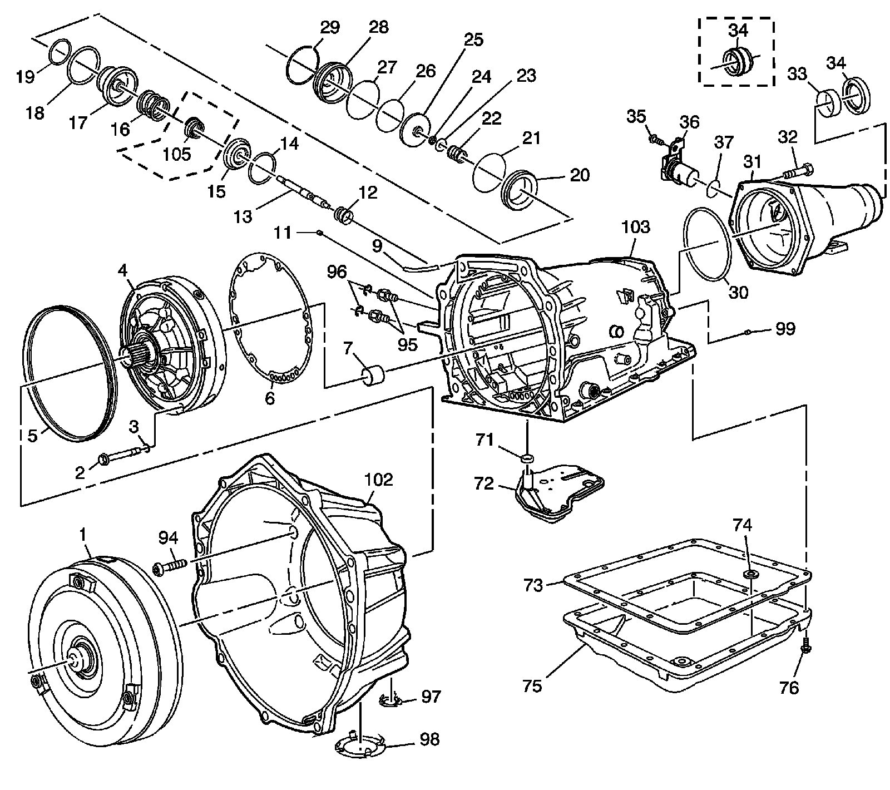
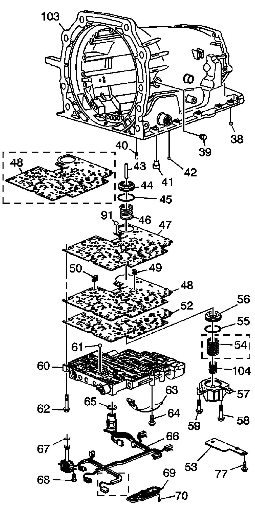

Case and Associated Parts
Disassembled Views
Case and Associated Parts:

1 - Torque Converter Assembly - Size Model Dependent
2 - Pump to Case Bolt
3 - Pump to Case Bolt O-Ring
4 - Oil Pump Assembly
5 - A/T Fluid Pump Seal - Pump to Case
6 - Pump Cover to Case Gasket
7 - Case Bushing
9 - Transmission Vent Assembly
11 - Case Servo Plug
12 - Servo Return Spring
13 - 2nd Apply Piston Pin
14 - Retainer Ring - 2nd Apply Piston
15 - Servo Cushion Spring Retainer
16 - Servo Cushion Spring - Outer
17 - 2nd Apply Piston
18 - Oil Seal Ring - 2nd Apply Piston - Outer
19 - Oil Seal Ring - 2nd Apply Piston - Inner
20 - Servo Piston Housing - Inner
21 - O-Ring Seal
22 - Servo Apply Pin Spring
23 - Servo Apply Pin Washer
24 - Retainer Ring - Apply Pin
25 - 4th Apply Piston
26 - Oil Seal Ring - 4th Apply Piston - Outer
27 - O-Ring Seal - 2-4 Servo Cover
28 - 2-4 Servo Cover
29 - Servo Cover Retaining Ring
30 - Case Extension to Case Seal
31 - Case Extension - Model Dependent
32 - Case Extension to Case Bolt
33 - Case Extension Bushing
34 - Case Extension Oil Seal Assembly - Model Dependent
34 - Case Extension Oil Seal Assembly - Model Dependent
35 - Speed Sensor Retaining Bolt
36 - Vehicle Speed Sensor (VSS)
37 - O-Ring Seal - VSS to Case Extension
71 - Filter Seal
72 - Transmission Oil Filter Assembly - Model Dependent
73 - Transmission Oil Pan Gasket
74 - Chip Collector Magnet
75 - Transmission Oil Pan - Model Dependent
76 - Transmission Oil Pan Screw
94 - Converter Housing to Case Bolt
95 - Oil Cooler Quick Connector
96 - Oil Cooler Quick Connect Clip
97 - Converter Housing Access Hole Plug - Model Dependent
98 - Converter Bolt Inspection Plate - Model Dependent
99 - Cup D4 Orifice Plug
102 - Converter Housing - Model Dependent
103 - Main Section Case - Model Dependent
105 - Servo Cushion Spring - Inner - Model Dependent
Case and Associated Parts - M30/M32/M70:

38 - Transmission Case Plug - Accumulator Bleed
39 - Pressure Plug
40 - Third Accumulator (#7) Retainer and Ball Assembly
41 - Band Anchor Pin
42 - Retainer and Ball Assembly - Double Orifice (#10)
43 - Accumulator Piston Pin
44 - 3-4 Accumulator Piston
45 - Oil Seal Ring - 3-4 Accumulator Piston
46 - 3-4 Accumulator Spring - Model Dependent
47 - Spacer Plate to Case Gasket
48 - Valve Body Spacer Plate
48 - Valve Body Spacer Plate w/Gasket - Bonded - Model Dependent
49 - Shift Solenoids Screen
50 - Pressure Control Solenoid Screen
52 - Spacer Plate to Valve Body Gasket
53 - Spacer Plate Support Plate
54 - 1-2 Accumulator Spring - Outer - Model Dependent
55 - Oil Seal Ring - 1-2 Accumulator
56 - 1-2 Accumulator Piston
57 - 1-2 Accumulator Cover and Pin Assembly - Model Dependent
58 - Accumulator Cover Bolt
59 - Accumulator Cover Bolt
60 - Control Body Valve Assembly - Model Dependent
61 - Checkball (#2, 3, 4, 5, 6, 8, 12)
62 - Valve Body Bolt
63 - Manual Detent Spring Assembly
64 - Manual Detent Spring Bolt
65 - Wiring Harness Pass-Through Connector O-Ring Seal
66 - Wiring Harness Solenoid Assembly - Model Dependent
67 - O-Ring Seal - Solenoid
68 - Hex Washer Head Bolt - Solenoid
69 - Transmission Fluid Pressure Manual Valve Position Switch Assembly
70 - Pressure Switch Assembly Bolt
77 - Spacer Plate Support Bolt
77 - Spacer Plate Support Bolt
91 - Number 1 Checkball
103 - Main Section Case - Model Dependent
104 - 1-2 Accumulator Spring - Inner